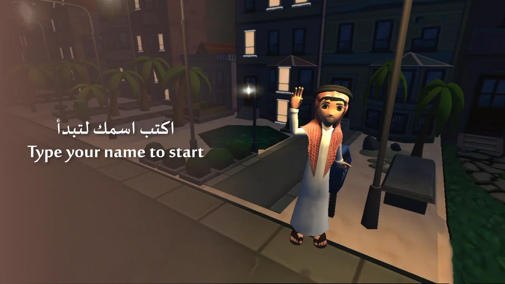
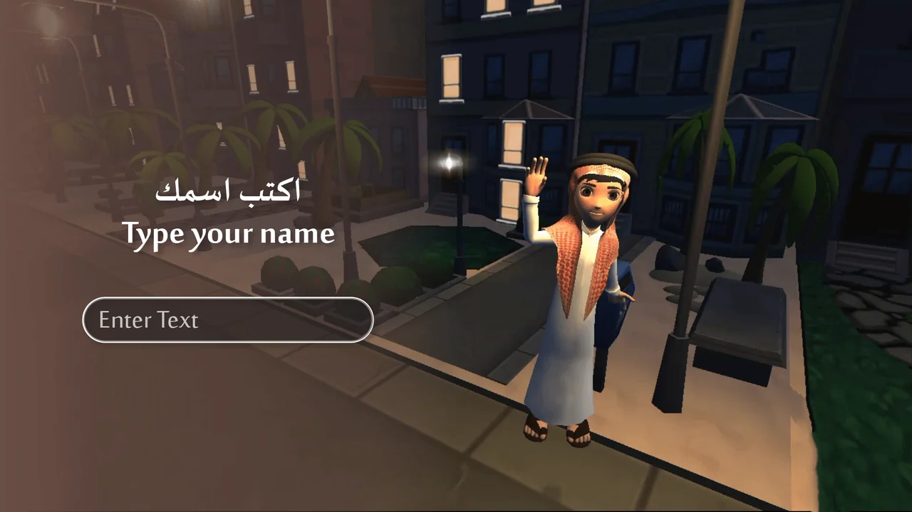
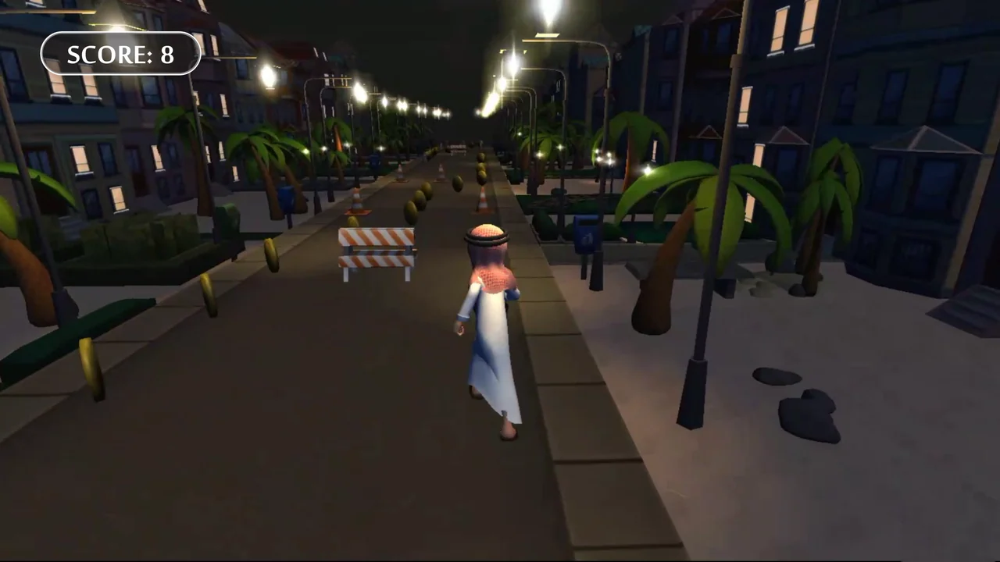
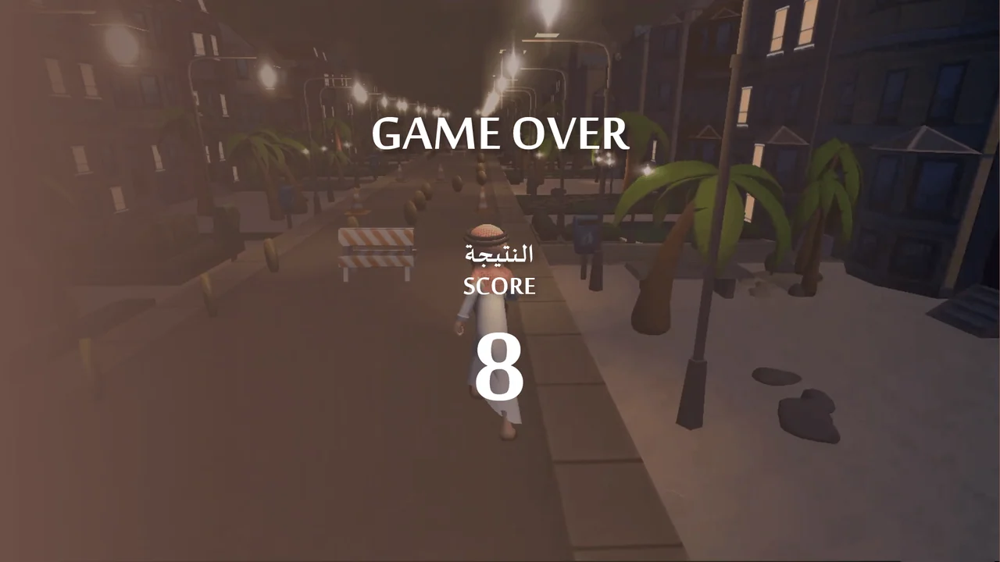

Bilingual name-entry panel
Pages 1 and 3 are complete existing compositions without visible organization marks. Both were exported as full native pages without content removal or raster edits.
Bilingual entry followed by an open view of the route.
Explore the story
Carry a consistent visual tone from registration into the runner scene.
A translucent panel separates the name prompt from the nighttime street. The gameplay artwork moves behind the character, leaving a compact score panel above coins and obstacles.
Pages 1 and 3 are complete existing compositions without visible organization marks. Both were exported as full native pages without content removal or raster edits.
The score value 8 appears in the native gameplay artwork; it is a sample interface value, not a measured result.
The entry composition introduces a waving character on the right and an Arabic-and-English name prompt on the left.
Explore the complete compositions and interface states. Select any image for a closer look.
04 / PROJECT IMAGES
Select a view to explore.
The introductory composition presents the character and night-street setting before the round begins.
Name entry: one bilingual prompt and an empty field keep the introduction focused.

A behind-the-runner view keeps obstacles, pickups and the score within one readable composition.

Round complete: a quiet background overlay makes the sample score prominent. The value is design artwork, not an event result.

Structure, interaction and visual decisions that give the work its character.
RoleConfirm interface composition, Arabic-and-English typography, state design and any development work separately from character, environment and source-game creation.
AssetsThe character and street imagery may be supplied or reused game assets. Native Illustrator pages do not prove original modeling, illustration or programming. Confirm the source-game license and collaborators, and preserve the distinction between interface adaptation and asset authorship.
StatusPrivate game-interface study. Native artwork reviewed; gameplay, controls, animation and delivery unverified.